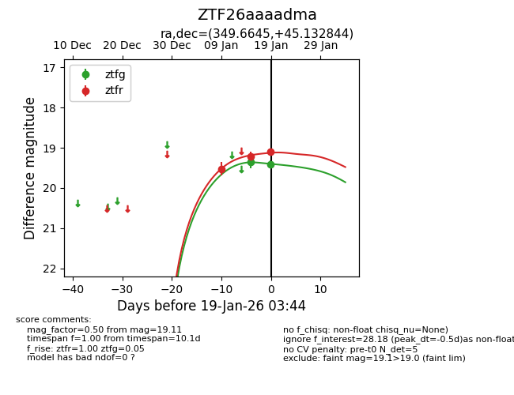
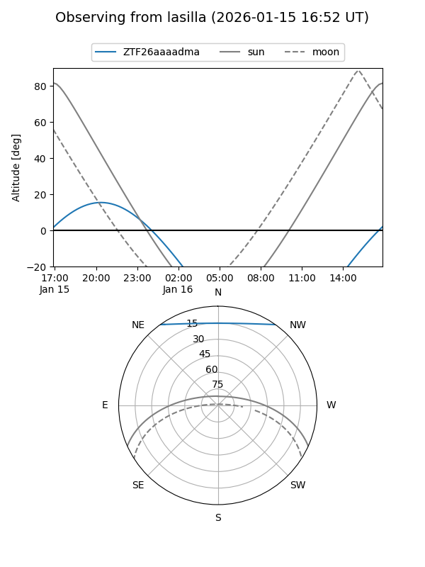
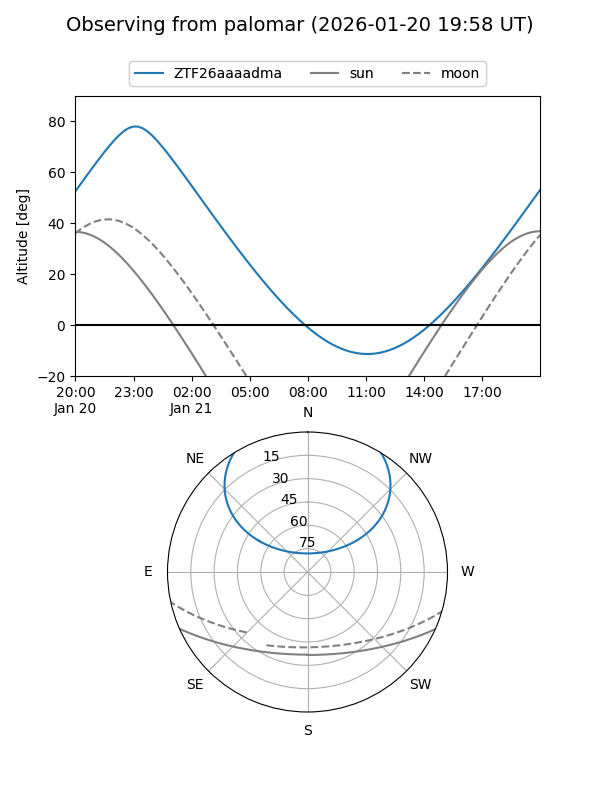
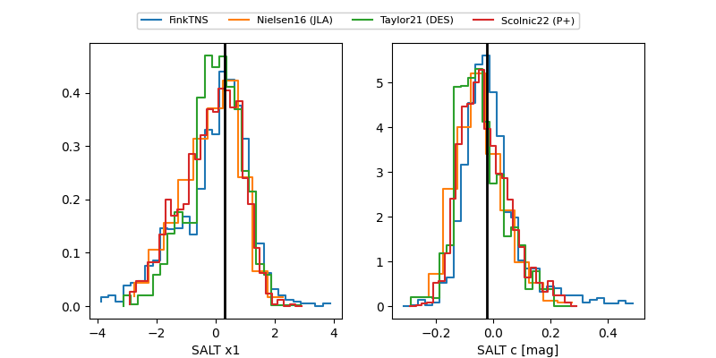

ZTF26aaaadma
Target ZTF26aaaadma at 2026-01-15 08:50
Aliases and brokers:
FINK: link
Lasair: link
ALeRCE: link
alt names
ZTF26aaaadma (ztf,fink_ztf)
Coordinates:
equatorial (ra, dec) = 349.6645,+45.13284
equatorial (HMS+DMS) = 23:18:39.49,+45:07:58.24
galactic (l, b) = (106.2373,-14.71021)
Flags:
Photometry:
last ztfg=19.35, ztfr=19.52
1 ztfg, 1 ztfr detections
Lightcurve

Visibility


Additional plots
